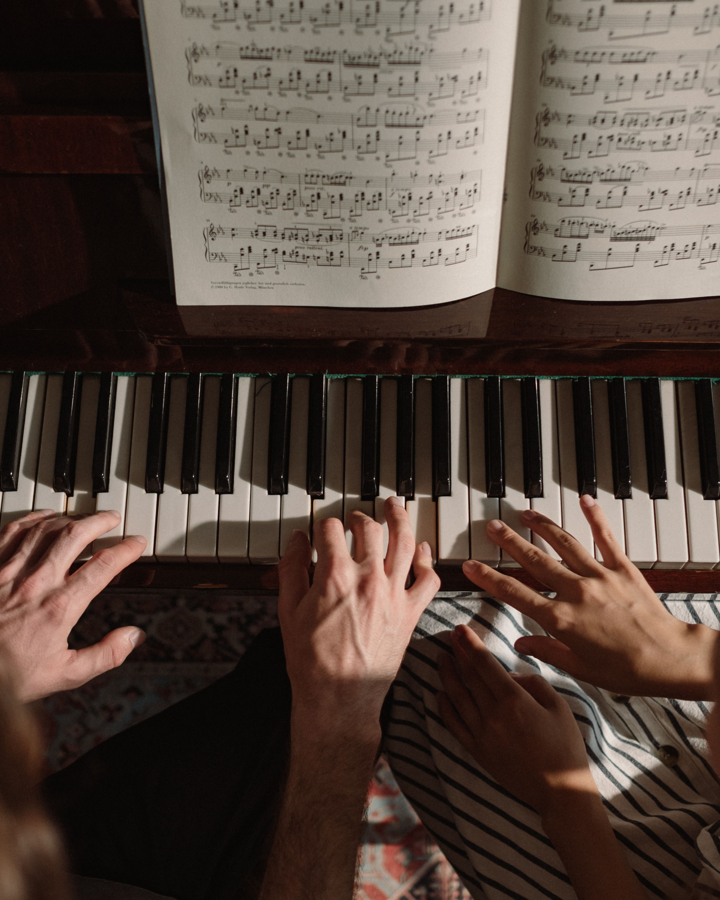

El Trayecto Artístico Profesional (TAP) constituye el ciclo básico de formación para quienes desean iniciar un recorrido orientado a los estudios superiores de música. Su propósito es brindar las bases musicales, técnicas y expresivas necesarias para continuar la formación en los Profesorados de la Escuela Superior de Música.
Durante este trayecto, los estudiantes desarrollan competencias fundamentales en práctica instrumental o canto, lectura y escritura musical, entrenamiento auditivo y formación artística integral. El TAP prepara a los futuros músicos para afrontar con solidez los desafíos de una formación profesional, ofreciendo una continuidad académica hacia los estudios superiores.
La propuesta contempla las orientaciones en canto, piano, guitarra, flauta dulce, flauta traversa, oboe, clarinete, trompeta, trombón, corno, saxofón, violín, viola, violonchelo, contrabajo, bandoneón, acordeón y percusión.
Destinado a: adolescentes y jóvenes interesados en la formación musical profesional.
Duración: 4 años.
Plan de estudios: 24 materias (Instrumento) o 29 materias (Canto, incluye Foniatría).
Acreditación: Certificado de aprobación del Trayecto Artístico Profesional, con ingreso directo a los Profesorados de la institución.
Pasá el cursor sobre una materia para ver sus correlativas. Si hacés click, la selección queda fijada para que puedas recorrer la página; hacé click otra vez en la misma materia, presioná Escape o hacé click fuera de la tabla para limpiar.
| Tipo | Curso | Hs Semanales | Cursado |
|---|---|---|---|
| Materia | Gramática del Lenguaje Musical I | 4 Horas | Presencial (Anual) |
| Materia | Técnica Corporal I | 2 Horas | Presencial (Anual) |
| Taller | Práctica Coral I | 2 Horas | Presencial (Anual) |
| Materia | Técnica Vocal y Lectura a Primera Vista I | 4 Horas | Presencial (Anual) |
| Materia | Fonética Italiana | 2 Horas | Presencial (Anual) |
| Materia | Técnica Instrumental y Lectura a Primera Vista I | 4 Horas | Presencial (Anual) |
| Tipo | Curso | Hs Semanales | Cursado |
|---|---|---|---|
| Materia | Gramática del Lenguaje Musical II | 4 Horas | Presencial (Anual) |
| Materia | Técnica Corporal II | 2 Horas | Presencial (Anual) |
| Taller | Práctica Coral II | 2 Horas | Presencial (Anual) |
| Taller | Instrumento Complementario I | 2 Horas | Presencial (Anual) |
| Materia | Técnica Vocal y Lectura a Primera Vista IITécnica Instrumental y Lectura a Primera Vista II | 4 Horas | Presencial (Anual) |
| Materia | Fonética FrancesaTaller de Informática | 2 Horas | Presencial (Anual) |
| Tipo | Curso | Hs Semanales | Cursado |
|---|---|---|---|
| Materia | Gramática del Lenguaje Musical III | 4 Horas | Presencial (Anual) |
| Materia | Armonía Aplicada y Técnica de Análisis I | 2 Horas | Presencial (Anual) |
| Taller | Instrumento Complementario II | 2 Horas | Presencial (Anual) |
| Materia | Movimientos, Escuelas y Tendencias en la Música I | 2 Horas | Presencial (Anual) |
| Materia | Estética General | 2 Horas | Presencial (Anual) |
| Taller | Repertorio y Técnica Vocal IRepertorio y Técnica Instrumental I | 4 Horas | Presencial (Anual) |
| Materia | Fonética Alemana | 2 Horas | Presencial (Anual) |
| Taller | Práctica y Ensamble I | 4 Horas | Presencial (Anual) |
| Taller | Práctica y Ensamble I | 6 Horas | Presencial (Anual) |
| Tipo | Curso | Hs Semanales | Cursado |
|---|---|---|---|
| Materia | Gramática del Lenguaje Musical IV | 4 Horas | Presencial (Anual) |
| Materia | Armonía Aplicada y Técnica de Análisis II | 2 Horas | Presencial (Anual) |
| Taller | Movimientos, Escuelas y Tendencias en la Música II | 2 Horas | Presencial (Anual) |
| Taller | Técnicas de improvización | 4 Horas | Presencial (Anual) |
| Seminario | Proyecto Final | 3 Horas | Presencial (Anual) |
| Taller | Repertorio y Técnica Vocal IIRepertorio y Técnica Instrumental II | 4 Horas | Presencial (Anual) |
| Taller | Instrumento Complementario III | 2 Horas | Presencial (Anual) |
| Materia | Fonética Inglesa | 2 Horas | Presencial (Anual) |
| Taller | Práctica y Ensamble II | 2 Horas | Presencial (Anual) |
| Taller | Práctica y Ensamble II | 6 Horas | Presencial (Anual) |
Aliquyam accusam clita nonumy ipsum sit sea clita ipsum clita, ipsum dolores amet voluptua duo dolores et sit ipsum rebum, sadipscing et erat eirmod diam kasd labore clita est. Diam sanctus gubergren sit rebum clita amet.
Fotocopia de Documental Nacional de Identidad (DNI) de ambos lados
Labore rebum duo est Sit dolore eos sit tempor eos stet, vero vero clita magna kasd no nonumy et eos dolor magna ipsum.
Labore rebum duo est Sit dolore eos sit tempor eos stet, vero vero clita magna kasd no nonumy et eos dolor magna ipsum.